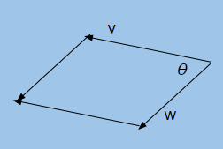

The cross product is an operation between two vectors that produces a third vector called a normal. The normal vector is orthogonal to the original two vectors. Given two vectors, $v$ and $w$ and $\theta$ as the angle between those vectors, the cross product $u$ can be visualized as:
Unlike the dot product, the cross product is not commutative. If you change the order of the operands so that you have $w \times v$, then you have to negate the vector that is produced (it is a vector that is going in the opposite direction of $u$).
$$v \times w = -(w \times v)$$
The formula to calculate a cross product for three dimensional vectors $v$ and $w$ is:
$$v \times w = (v_y w_z - w_y v_z, v_z w_x - w_z v_x, v_x w_y - w_x v_y) $$
The length of the cross product describes the area formed by the parallelogram of which $v$ and $w$ are two of the sides.
$$||v \times w|| = ||v||||w||\sin\theta$$

One common use case for the cross product as mentioned in its definition is to find the normal to a surface. But just like the dot product, you can use the cross product to determine if $v$ and $w$ are parallel. As the angle between the vectors approaches zero, then the cross product will approach the zero vector. You can create a test resolving to a scalar by also using the dot product. If the vectors $v$ and $w$ are nearly parallel:
$$(v \times w)\cdot(w \times v) \approx 0$$
Van Verth, James M., Lars M. Bishop. "Vectors and Points." Essential Mathematics for Games and Interactive Applications. 3rd ed. Boca Raton: CRC, 2016. Web. ISBN 978-1482250923.
-- Chris Edwards (Senior Engine Programmer)